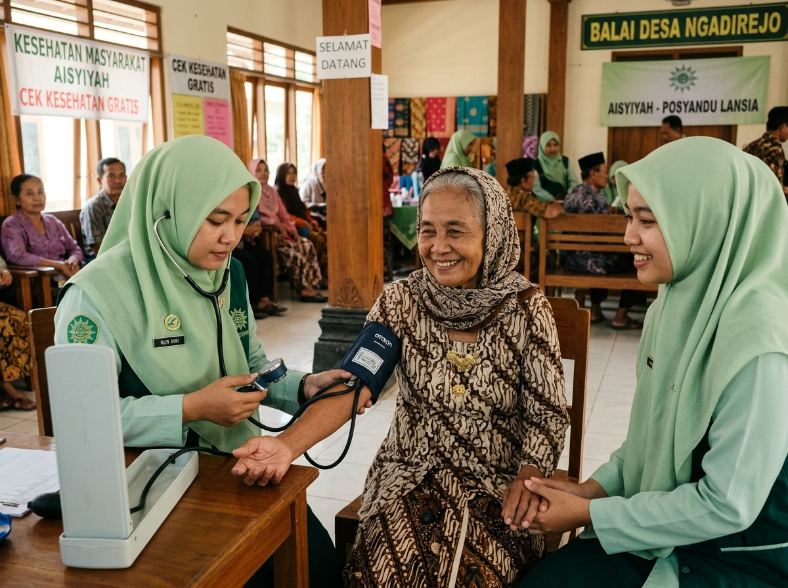
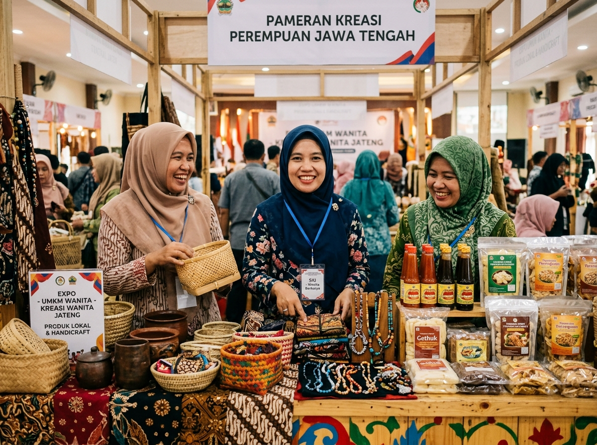
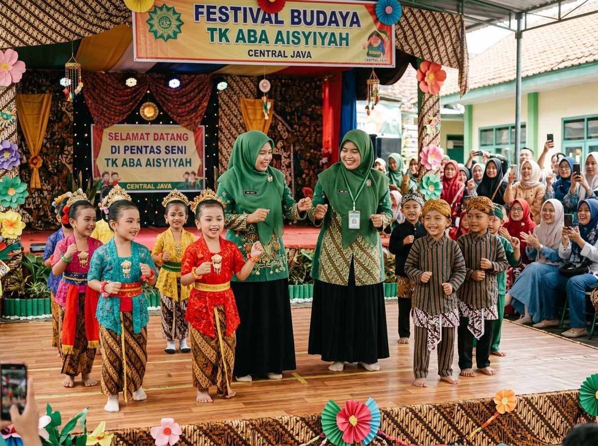
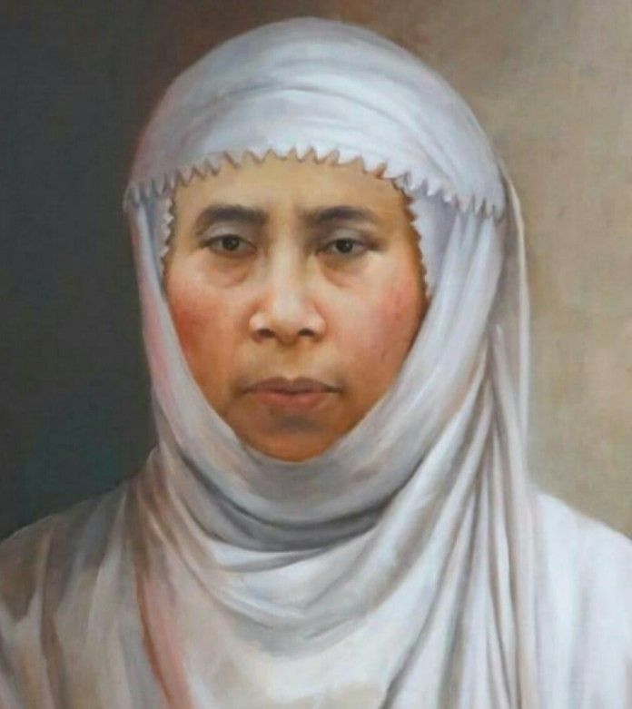
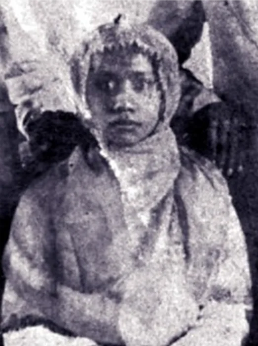
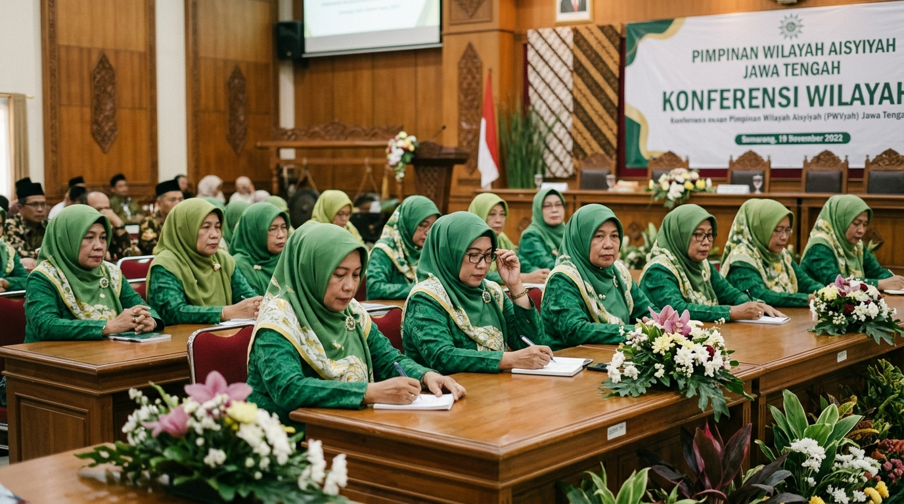
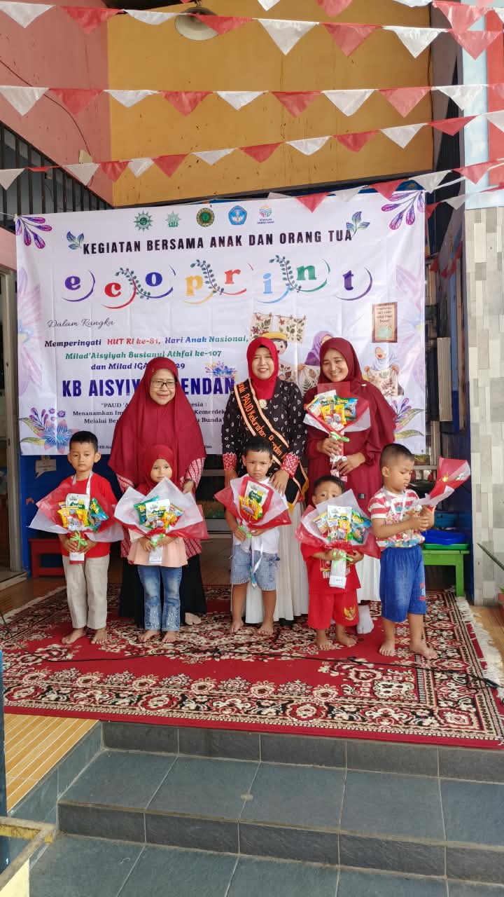
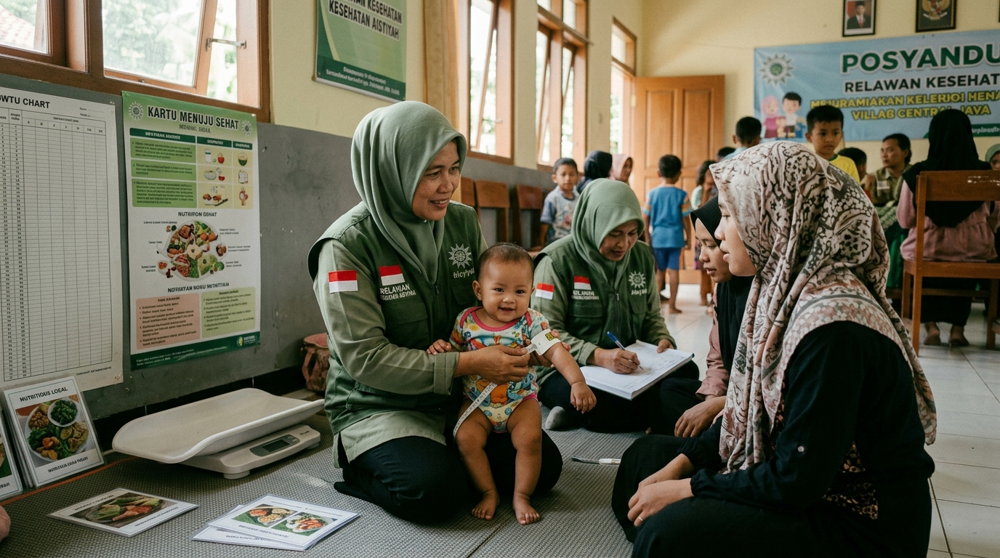

Dokumentasi Visual
Galeri Kegiatan





Dokumentasi digital perjalanan peradaban, pemikiran tokoh pejuang, khazanah pustaka, serta gerakan sosial dakwah Pimpinan Wilayah Aisyiyah Jawa Tengah dari masa ke masa.
"Perempuan berkemajuan adalah perempuan yang memiliki alam pikiran dan kondisi kehidupan yang maju dalam segala aspek tanpa meninggalkan nilai-nilai keluhuran Islam."
Aisyiyah adalah organisasi perempuan persyarikatan Muhammadiyah yang berdiri sejak tahun 1917 M (1335 H). Di Jawa Tengah, Aisyiyah tumbuh menjadi pilar utama pemberdayaan perempuan dalam bidang pendidikan anak, kesehatan ibu dan anak, kemandirian ekonomi, serta hukum dan hak asasi.
Menyusuri rekam jejak perjuangan para tokoh perempuan muslimah sejak masa perintisan awal abad ke-20 hingga era modern saat ini.
Cikal bakal gerakan perempuan yang diprakarsai oleh Nyai Ahmad Dahlan bersama gadis-gadis terpelajar di Kauman.
Pondasi dasar pendidikan budi pekerti dan membaca Al-Qur'an bagi kaum ibu dan remaja putri.
Peresmian nama Aisyiyah yang dinisbatkan kepada Siti Aisyah r.a., istri tercinta Rasulullah SAW.
Secara resmi diperkenalkan ke publik dan mulai menjalankan program sistematis.
Melebarkan sayap dakwah ke Surakarta, Kudus, Pekalongan, dan menyebar ke seluruh karesidenan Jawa Tengah.
Kader-kader putri di Jawa Tengah mulai mendirikan pengajian berkala dan sekolah kader putri.
Memperkuat jejaring ribuan ranting, layanan digitalisasi pustaka, dan kemandirian institusi perempuan.
Aisyiyah Jawa Tengah hadir sebagai pelopor gerakan perempuan modern yang berdaya saing global.

Pahlawan NasionalSiti Walidah (1872 - 1946)
Pendiri gerakan Aisyiyah, pelopor pemberdayaan kaum wanita muslimah melalui pendidikan asrama putri, pengajian buruh pabrik, dan dapur umum perjuangan kemerdekaan.
Lihat Profil LengkapTokoh Penggerak & Pendidik (1906 - 1996)
Orator termuda utusan Aisyiyah pada Kongres Perempuan Indonesia Pertama tahun 1928. Aktif membina cabang dan perkaderan kepemimpinan Aisyiyah di tanah Jawa Tengah.
Lihat Profil Lengkap
Ketua Pertama AisyiyahKetua Pertama (1917 - 1920-an)
Sosok wanita cerdas lulusan sekolah netral yang fasih berbahasa Belanda dan Arab. Pemimpin pertama yang meletakkan dasar administrasi dan kepemimpinan modern di tubuh Aisyiyah.
Lihat Profil Lengkap
Berita PWAPimpinan Wilayah Aisyiyah Jawa Tengah menggelar agenda strategis dalam memperkuat konsolidasi kelembagaan di 35 kabupaten/kota...
Baca Selengkapnya
PendidikanTaman Kanak-kanak Aisyiyah Bustanul Athfal (TK ABA) menjadi pondasi emas pendidikan generasi penerus bangsa yang berakhlak mulia...
Baca Selengkapnya
KesehatanMajelis Kesehatan PWA Jateng menggalakkan edukasi gizi seimbang dan pemeriksaan tumbuh kembang balita secara intensif...
Baca Selengkapnya

